Lecturameter 1999
Lecturameter as if you had installed it from a CD-ROM in 1999. An alternative client for the app, with windows, menus and tables, that opens your real backups.
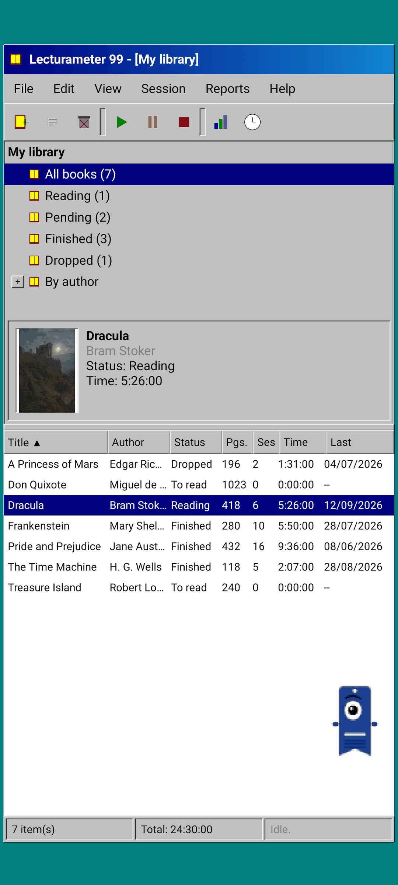
What it is
A late-nineties desktop program running on your phone. One window over a teal desktop, a menu bar, a toolbar, a folder tree, a dense table and a status bar.
- Library tree: all books, reading, pending, finished, dropped and by author
- Table with title, author, status, pages, sessions, time and last read. Tap a column header to sort
- Real book search, using the same catalog Lecturameter uses
- Imports and exports the Lecturameter backup and the Goodreads CSV. Your data goes in and out without losing anything
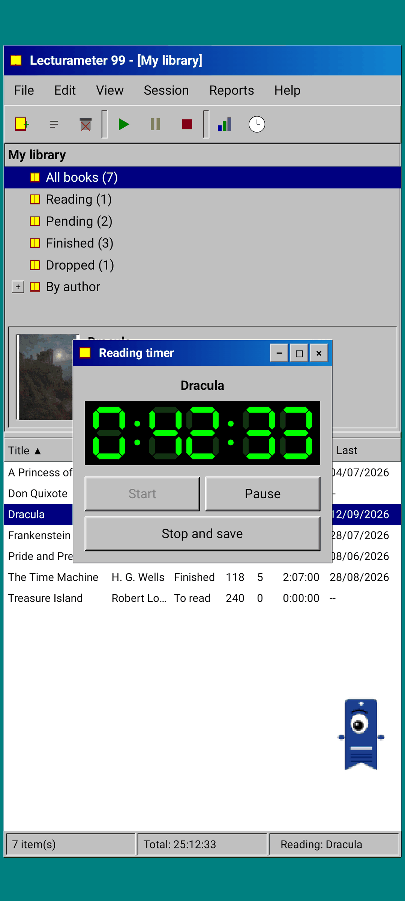
Why it exists
An experiment: rebuild the idea of Lecturameter from scratch under radically different design premises, without touching the real app. Of all the reinterpretations, the 1999 one was the one I liked most, so I finished it as a fun exercise and turned it into a complete client. It is simpler than Lecturameter on purpose: it is an experiment and, in principle, it will not get any further development.
- Timer in a floating window with a green LCD display. It moves, minimizes to a taskbar and keeps counting in the status bar
- When you stop, the save session dialog asks for your pages and works out your pace, just like Lecturameter
- Saved sessions are Lecturameter sessions: they come back to the modern app if you export a Lecturameter 1999 backup and import it in Lecturameter.
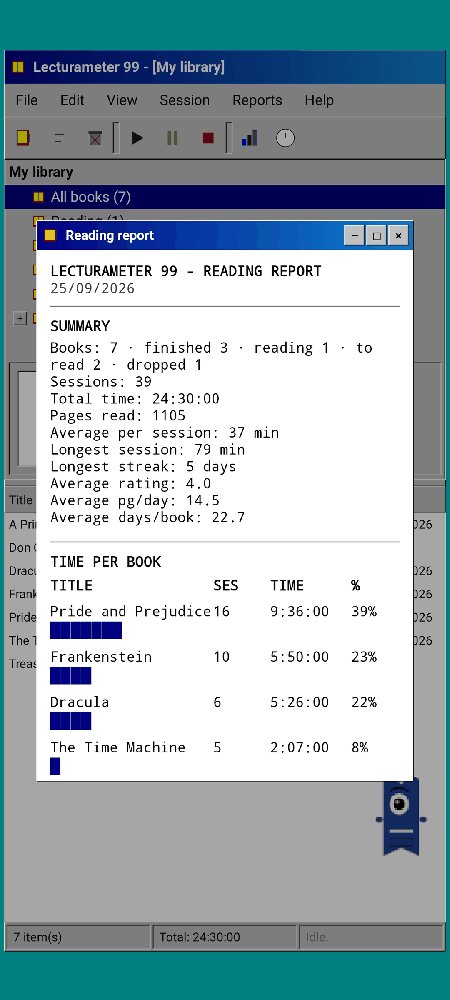
Reading report
Statistics are a printed report: summary, time per book with block bars, speed in pages per day, a calendar of the year drawn in characters and the last seven days.
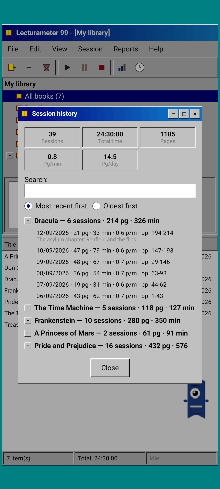
Session history
Sessions grouped by book in a tree with plus and minus, with five figures at the top: sessions, total time, pages, pages per minute and pages per day.
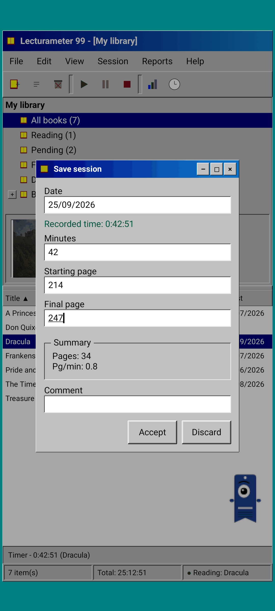
Save session
Date, minutes, first and last page, comment. The summary works out pages and pace as you type. If you reach the last page, it asks whether you finished the book.
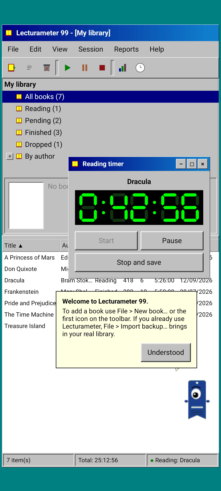
Pagi 99
Pagi travels to 1999 too: pixelated and loose on the screen like the office assistants of the time. You can drag it, it says a line when you tap it and it shows tips in yellow balloons.
Themes
Classic 98 is free and the default. The pack adds six more, each with its own background and its own sounds.
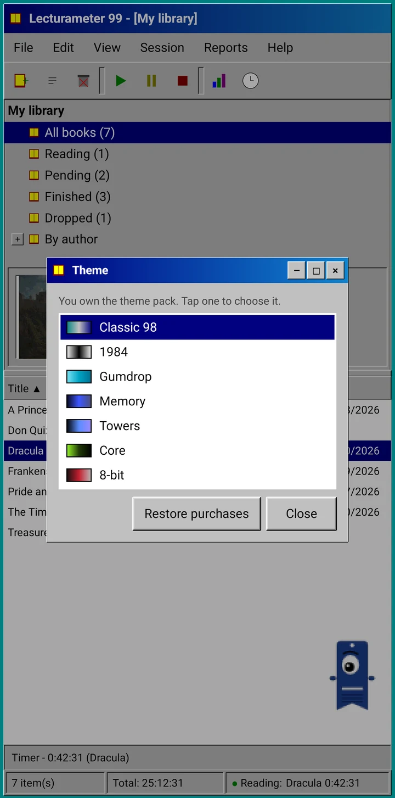
Pick it from the View menu
View, Theme... opens a window with the seven themes. The change reaches every window, the timer and Pagi at once.
- Classic 98, free and the default: grey windows, navy title bars and a teal desktop
- Theme pack: 1984, Gumdrop, Memory, Towers, Core and 8-bit
- Each theme brings its own desktop background and its own sounds for taps, windows and the timer
- View, Theme sounds turns the sounds off if you read in silence
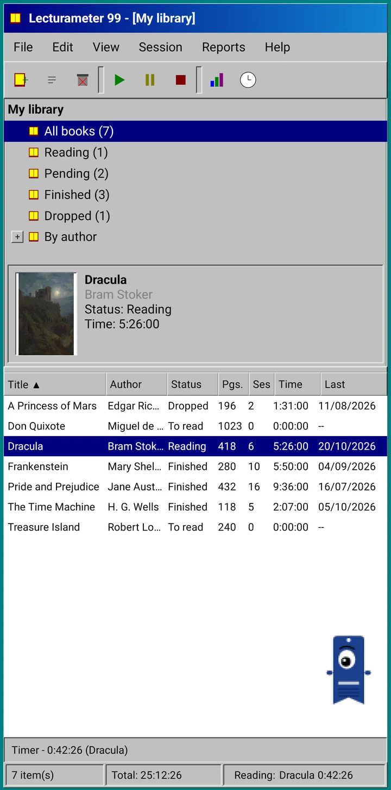
Classic 98
Grey windows, navy title bars and a teal desktop. Free, it is the one the app opens with.
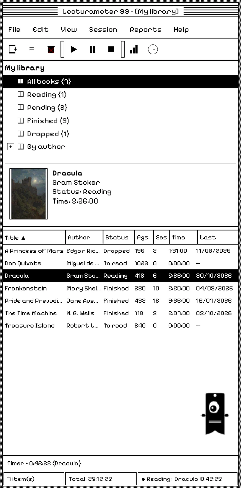
1984
A one-bit black and white desktop, with dot patterns and square windows.
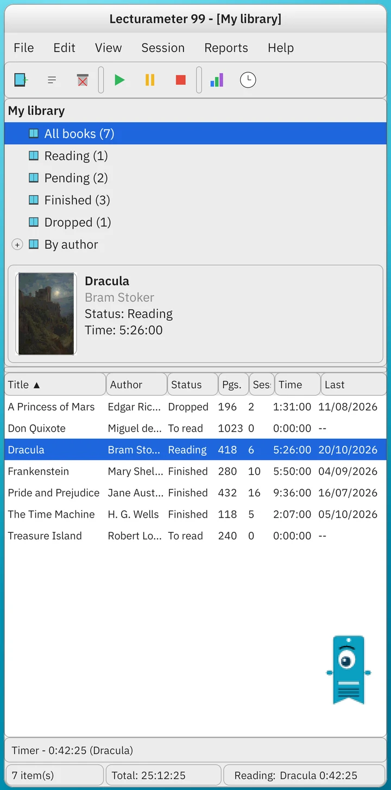
Gumdrop
Translucent coloured plastic, rounded buttons and stripes in the background.
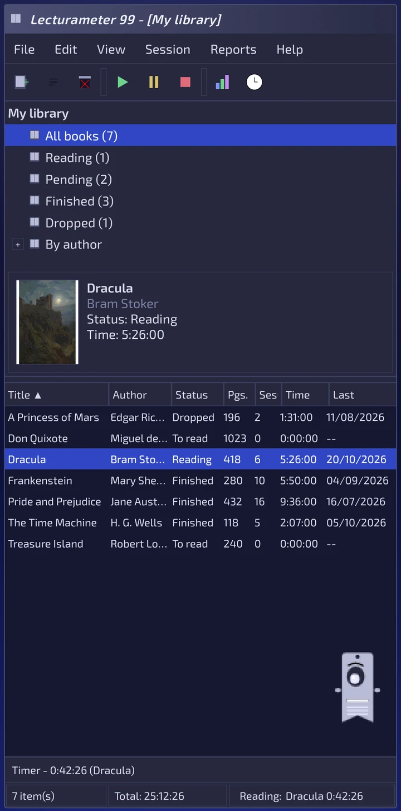
Memory
The menus of a nineties disc console, in dark blues.
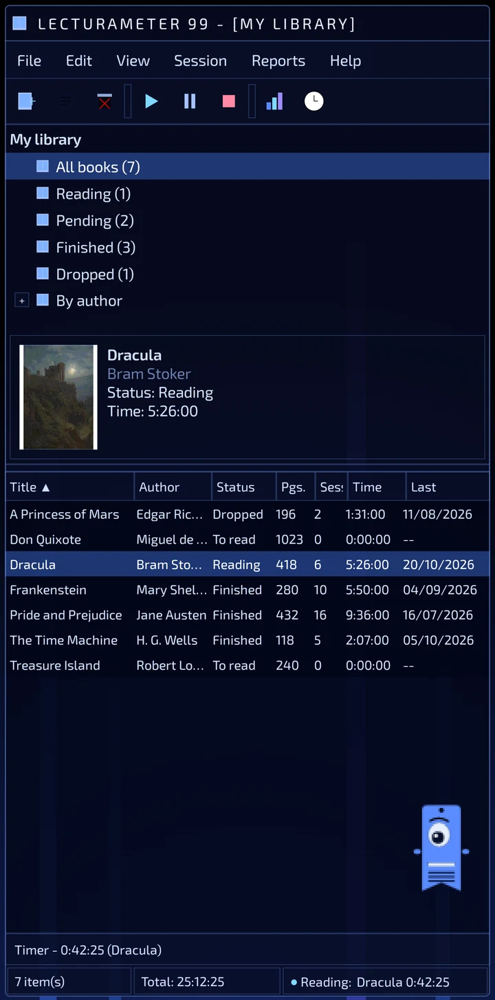
Towers
Another nineties disc console, night blue with light blue lines.
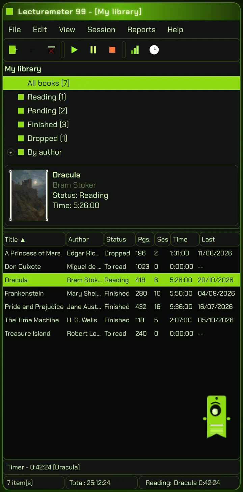
Core
A black and green console, like a screen that never switches off.
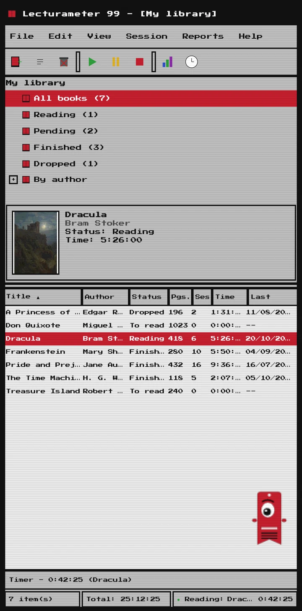
8-bit
Fat pixels, few colours and blocky letters.
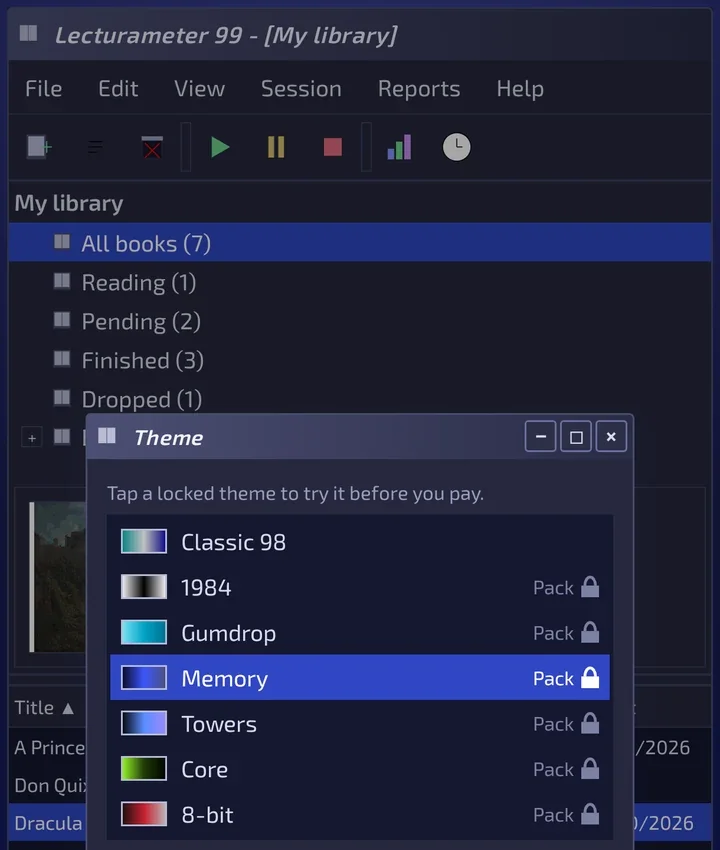
Try it before you pay
Tap a locked theme and the whole app changes to it. If you close without buying, the previous theme comes back.
Screensavers
They only appear while the timer is running and you leave the phone alone. They wait 1, 3 or 5 minutes, or never. One tap takes you back and the timer keeps counting.
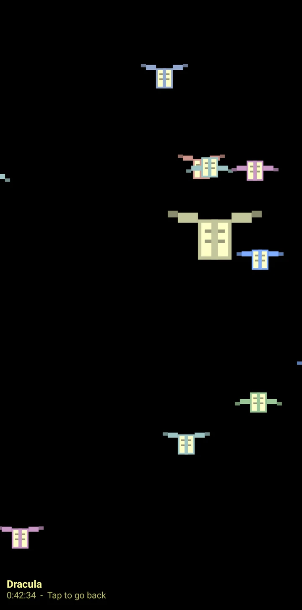
Flying books
Pixel books flapping their covers across a black screen.
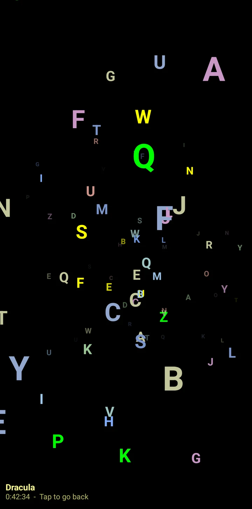
Letter field
Letters from many alphabets drifting past, like a starfield.
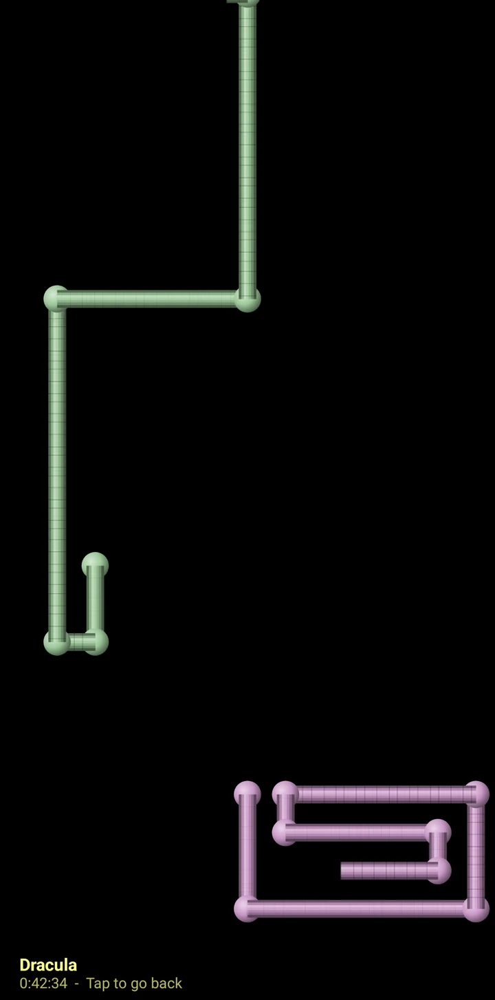
Page pipes
Pipes made of pages that draw themselves until the screen fills up.
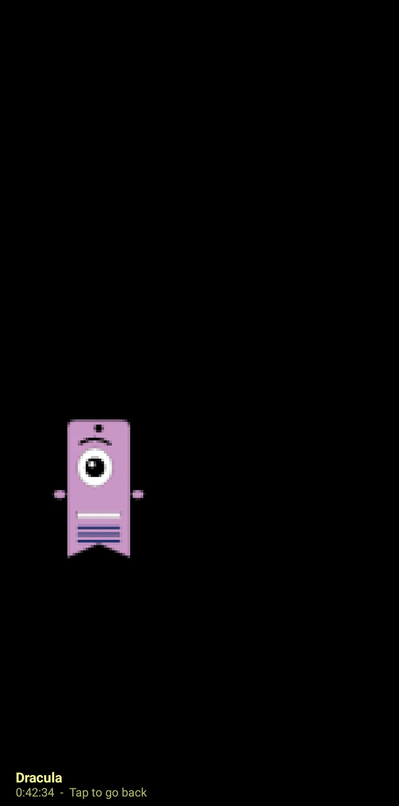
Bouncing Pagi
Pagi bouncing off the edges of the screen.
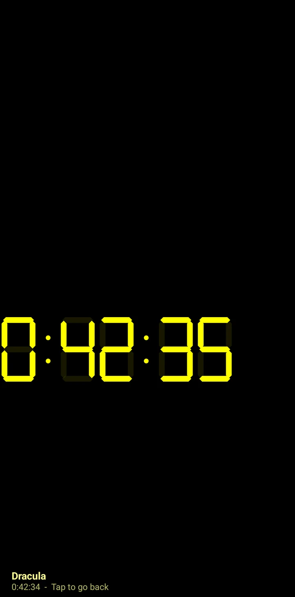
Reading clock
The session time in big LCD digits.
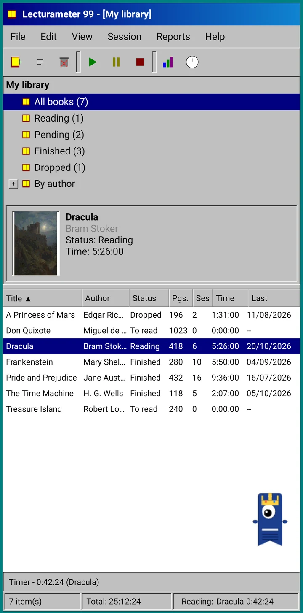
Costumes for Pagi
Eight costumes for Pagi 99. You choose them in View, Pagi's costume..., and you can try them on before paying.
- Cassette player
- Backwards cap
- 3D glasses
- Neon sunglasses
- Floppy disk in hand
- Leather jacket
- Pocket pet
- Cardboard crown
Store
The app is free and complete for logging your reading. What you can buy only changes how it looks.
The whole app, with no time limit.
- Library, search, timer and sessions
- Reading report and session history
- Lecturameter backup and Goodreads CSV, in and out
- Classic 98 theme and Pagi 99
- No account and no ads
One-time payments, no subscriptions.
- Theme pack, €3.49: 6 themes with background and sounds, plus the screensavers
- Screensavers, €1.99: the 5 screensavers
- Pagi costumes, €1.99: the 8 costumes
- The whole 1999, €4.49: themes, screensavers and costumes
Optional tips in the Help menu, if you want to buy me a coffee.
Themes and costumes can be tried live before paying. If you close without buying, what you had comes back.
What changes compared to Lecturameter
Same as Lecturameter
- Same data: books, sessions, statuses, ratings and notes. The backup file is the same in both apps.
- Book search by title or author.
- Real timer: it keeps counting in the background and even if you close the app.
- No account, no ads, no connection except to search for books.
- The same languages as Lecturameter.
Only in the 1999 edition
- A 1999 desktop interface. No Material.
- Real windows: you drag them, minimize them and close them with the cross.
- Reading report in text, with a calendar drawn in characters.
- Context menu on long press and keyboard shortcuts if you connect a keyboard.
- Pixelated Pagi 99 with tip balloons.
- Optional themes with their own background and sounds, screensavers while the timer runs and costumes for Pagi.
What it leaves out, on purpose
- No Pro and no subscription. Logging your reading is all free, the store only sells looks.
- No challenges, bingos, yearly wrapped or widgets.
- No immersive session, ambient sounds or Google Drive backup. The backup is saved as a file.
Closed test
Lecturameter 1999 is in closed testing on Google Play. iOS will come later, with no date yet.
- Join the group groups.google.com/g/lecturameter-1999
- Sign up as a tester at play.google.com/apps/testing/com.lecturameter.r1999
- Install it from Google Play
In closed testing on Google Play, iOS later. Read the blog post to see where it comes from and what to expect.